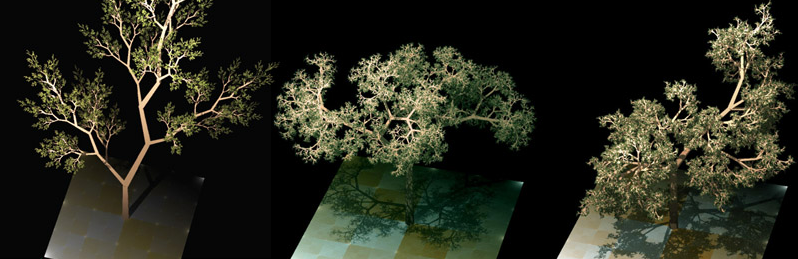
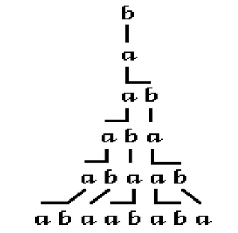
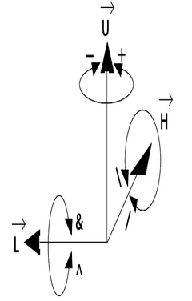
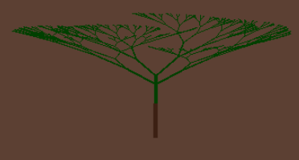
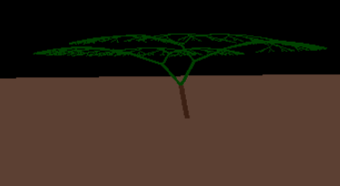
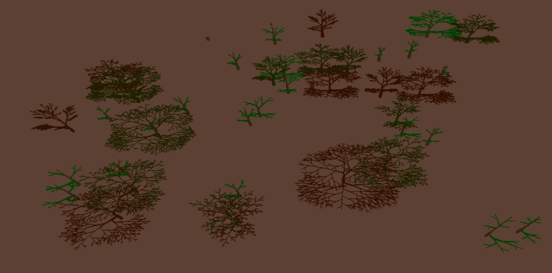
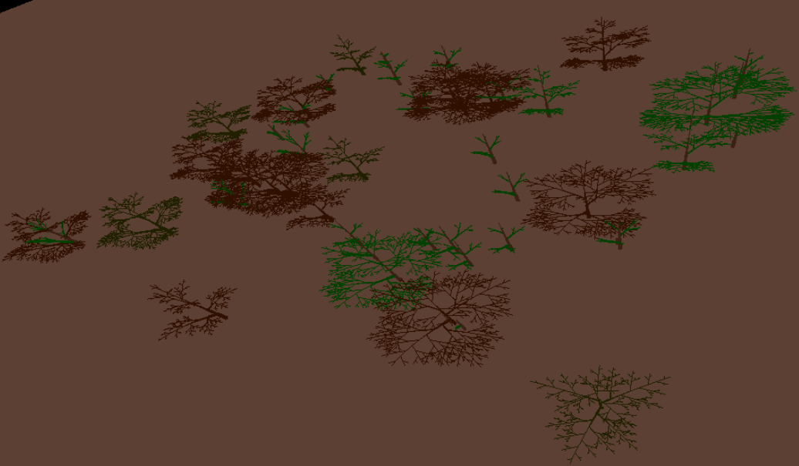
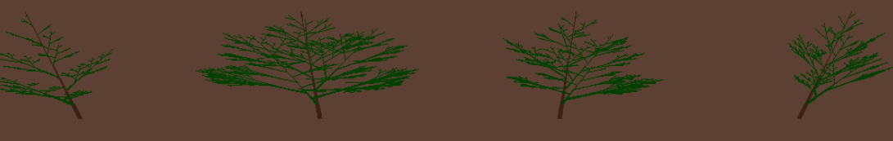
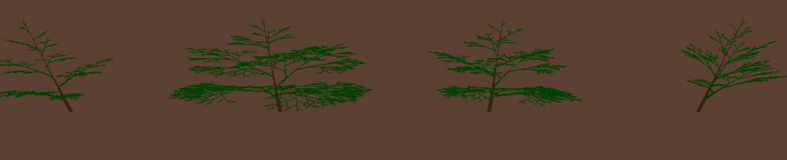

L-System Simulation of Forests
Murali Varma
Suraj Sirpilli

top
Introduction
L-System Simulation of Forests aims at simulating growth of trees in a forest based on their position in the environment. We use parameteric L-Systems for simulating tree growth. We have also implemented geotropism in plants. Growth of a tree is dependent on competition for resorurses and results in domination by the stronger (bigger) tree over the smaller ones.
top
Theory
L-systems

Lindenmayer systems or L-systems is a rewriting system.
In general, rewriting is a technique for defining complex objects by successively replacing parts of a simple initial object using a set of rewriting rules or productions. L-systems operate on character strings.
Like any rewriting systems L-systems also consist of production rules but what makes them different is unlike other the production rules are applied parallelly, this makes L-systems apt for depicting biological simulations.
L-systems consist of 3 main components. Values in paranthesis produces string shown on the right
- Alphabets (a, b)
- Axiom (b)
- Set of Production Rules (a -> ab)
Turtle Interpretation

Turtle is the geometric interpretation applied to the strings to generate schematic images.
A state of turtle is defined as a triplet (x,y,alpha) where :
(x,y) represent turtle's position and
angle alpha called 'heading' represents the
direction turtle is facing
Now this information can be used to simulate further steps by providing:
- d : stepsize
- delta : angle increment
Turtle can be extended to 3D by using 3 vectors to represent the current orientation of the turtle in space.
- H : Heading
- U : Up
- L : Left side of turtle
These vectors have unit length and are perpendicular to each other. They also satisfy
H X L = U
Following symbols are used to control the orientation of turtle in space:
- + : Turn left by angle d
- - : Turn right by angle d
- & : Pitch down by angle d
- ? : Pitch up by angle d
- \ : Roll left by angle d
- / : Roll right by angle d
- | : Turn around
Parametric L-systems

L-systems limit reduction of lines and angles to multiples of unit segments. To overcome this limitation we use Parametric L-systems.Parametric L-systems operate on parametric words which are strings of modules of letters with associated parameters.
A parametric L-system is defined as an ordered quadruple
G = < V, S, w, P >
where:
- V is the alphabet of the system
- S is the set of formal parameters
- wi s the axiom
- P is the set of formal parameters
Geotropism

It is the phenomenon of turning of plants towards gravity. In order to show geotropism we require Tropism Vector (T)
The orientation adjustment alpha is calculated using the formula
alpha = e |H ×T|
where :
- e is the parameter capturing axis' susceptibility to bend
- T can be seen as the force applied to H.
Once H is changed we adjust L and U accordingly
Forests
To generate forests, we randomly seed the forest floor. We then cap the maximum number of trees possible. Trees can vary in size (length, diameter).
Growth of the trees is determined by the surroundings. Growth of a smaller tree is hindered by a bigger tree next to it. Trees grow till a max age and then die at which point a new tree is grown at a random location on the forest floor.
top
Results

Forest overview with colors denoting the age of trees

Another view of a randomly generated forest

Honda trees generated with varying parameters

The same Honda trees as above, but with GeoTropism
top
Conclusion
Open L-sytems used in the project can be effectively used to generate a wide variety of trees. We can further make use of various techniques for generation of forests. A variety of factors affect the growth of trees in a forest. In this project we consider competition among trees as the deciding factor. The methods implemented by us have mostly been referenced from Dr. Przemyslaw Pruisnkiewicz's papers.
top
References
top